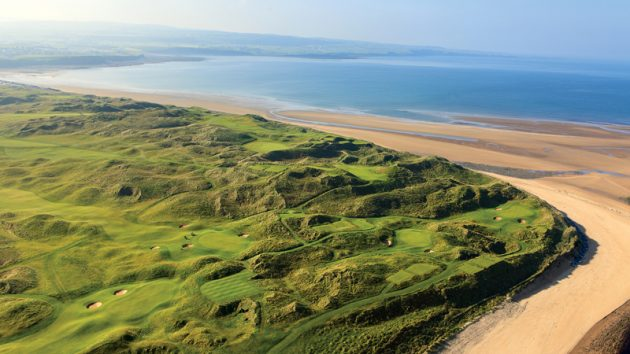
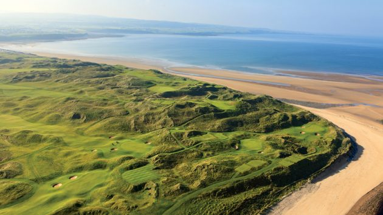

Emerse yourself in the breath-taking landscape of the Wild Atlantic Way while enjoying the world's best Links Classic and Parkland Golf courses.
Why should I play golf on the west coast?
- Over 40 golf courses with Atlantic view scenery
- Home to the world's largest sand dunes
- 100s of hotels and restaurants in-between courses
- Shannon airport is only 20 minutes from the coast
- Award winning links courses on the way
- Lahinch Golf Club
- Ballybunion Golf Club (The Old Course)
- Waterville Golf Links
 
